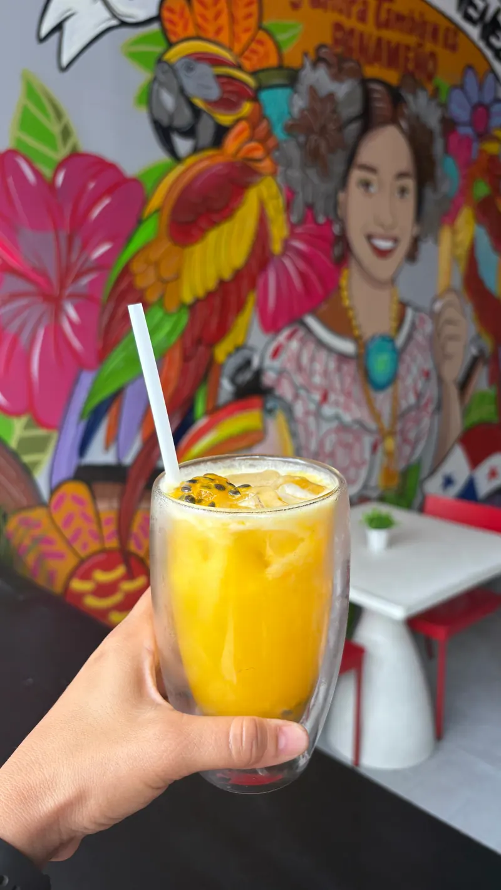
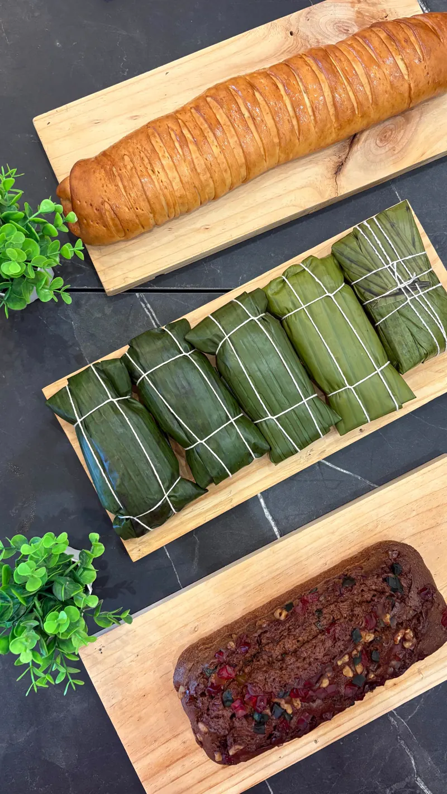

Empanadas venezolanas, pan de la casa y café en San Francisco
Panadería y restaurante de barrio
Aquí se come como en casa, panita.
Empanadas venezolanas, tequeños, pan del día y café, hechos cada mañana por sus dueños en San Francisco. Cocina panameña, venezolana y americana, con opciones vegetarianas y tu mascota bienvenida.

desde las 8:30 a.m.
- Atendido por sus dueños
- Panamá · Venezuela · EE. UU.
- Opciones vegetarianas
- Pet-friendly
- Delivery por PedidosYa
Menú destacado
Lo que la gente viene a buscar
Hacemos poco y lo hacemos con cariño. Esto es lo que más sale de la cocina.
-

La favorita
Empanadas venezolanas
Masa de maíz dorada y crujiente, bien rellena. Son lo que más se menciona en las reseñas, y con razón. Acompáñalas con nuestro ají.
-

Tequeños
Queso envuelto en masa, doraditos. Para comer aquí o llevar congelados a tu fiesta.
-

Desayunos y almuerzos
Platos del día con sazón panameña y venezolana, y clásicos americanos para arrancar la mañana.
-

Pan, repostería y postres
Panadería internacional y dulces caseros que salen del horno durante el día.
-

Café y espresso
El compañero de todo lo anterior. Para quedarte un rato o llevar.
-

Ají picante
Estilo panameño, hecho en casa. Pruébalo con las empanadas y después nos cuentas.
Directo de @panitagourmet
Salido de nuestra cocina
-

Pan de jamón -

Arepas rellenas -

Fosforera de mariscos -

Empanada y cafecito -

Boquitas para tu fiesta -

Jugos naturales -

Rollitos recién horneados -

Hallacas en temporada

Por qué nos quieren
Casi cinco estrellas en todas partes
Somos un local pequeño y nos lo tomamos personal. Esto es lo que más repiten quienes nos visitan.
-
Te reciben los dueños
Quienes nos visitan hablan de un trato cálido y cercano, como llegar a casa de un amigo.
-
Unas empanadas que se recuerdan
Es el plato que más se menciona. Varias reseñas las ponen entre las mejores que han probado.
-
Sabor venezolano de verdad
Recetas de casa, sin atajos. Quien extraña Venezuela lo nota en el primer bocado.
-
Atención muy pendiente
Servicio atento y rápido, con ganas de que te vayas contento.
-
Buenos precios
Porciones honestas a precios justos, algo que la gente agradece en cada reseña.
Temas resumidos de reseñas públicas en Google, Tripadvisor y Sluurpy.
Para tus fiestas
Tequeños congelados, listos para la fiesta
Cumpleaños, reuniones de oficina o el partido del domingo: llévate tus tequeños congelados y sírvelos recién hechos en casa. Encárgalos con tiempo por WhatsApp y te los tenemos listos.
- Encargos por WhatsApp
- Retiras en el local
- Pregunta por otros congelados

Horario y ubicación
Ven a vernos a San Francisco
Horario
- Lunes a sábado
- 8:30 a.m. – 4:30 p.m.
- Domingo
- 8:30 a.m. – 2:30 p.m.
Dirección
Plaza Fundadores, local 22Calle 72, San Francisco
Ciudad de Panamá
Al lado de Café Lavanda, cerca del car wash. Somos el último local a la izquierda.